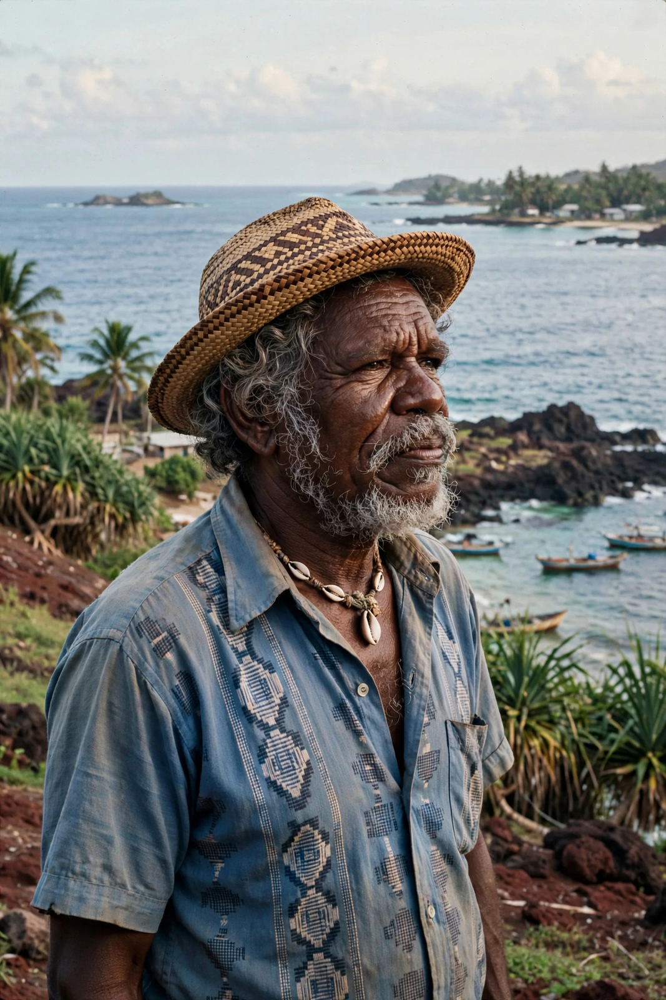

Eddie Mabo

| Eddie Mabo | |
|---|---|
| Born | 29 June 1936, Mer (Murray Island), Torres Strait, Queensland |
| Died | 21 January 1992, Brisbane, Queensland |
| Occupation | Land rights campaigner, gardener, wharf worker |
| Known for | Lead plaintiff in Mabo v Queensland (No 2) (1992) |
Edward Koiki Mabo (29 June 1936 – 21 January 1992) was an Indigenous Australian man from the Torres Strait Islands known for his role in campaigning for Indigenous land rights in Australia, in particular for being the lead plaintiff in the landmark High Court case that bears his name.
Life
Mabo was born on Mer (Murray Island) in the Torres Strait and raised according to Meriam custom, adopted by his uncle and aunt after his mother's death. He worked in various jobs — pearling lugger crewman, cane cutter, railway labourer and wharfie — before settling in Townsville, where he worked as a gardener at James Cook University. There, conversations with historians Noel Loos and Henry Reynolds brought home to him that, under Australian law, the land of his ancestors was legally Crown land — that his people's ownership, recognised among themselves for generations, meant nothing in the eyes of the law. He resolved to challenge that doctrine.
The Mabo case
In 1982 Mabo and fellow Meriam plaintiffs David Passi and James Rice began proceedings in the High Court of Australia seeking recognition of their traditional ownership of Mer. The case ran for a decade, including a remittal to the Supreme Court of Queensland to determine the facts of Meriam land tenure. Mabo died of cancer in January 1992; five months later, on 3 June 1992, the High Court handed down Mabo v Queensland (No 2), rejecting the doctrine of terra nullius and recognising native title in Australian law for the first time. The decision transformed Australian law and politics, leading to the Native Title Act 1993.
Legacy
Mabo is commemorated by Mabo Day (3 June), the naming of the State Library of Queensland's collection and James Cook University's library in his honour, and the 2012 telemovie Mabo. His grave in Townsville was vandalised by racists shortly after the decision, and his remains were reburied on Mer with traditional ceremony.
See also: Mabo v Queensland (No 2) · Torres Strait Islanders · Wik decision